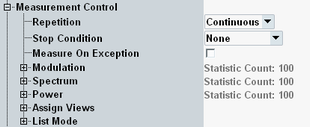
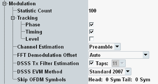
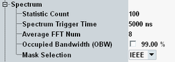
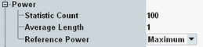

The measurement control parameters configure the scope of the measurement.

Defines how often the measurement is repeated if it is not stopped explicitly or by a failed limit check.
- Continuous: The measurement is continued until it is explicitly terminated. The results are periodically updated.
- Single-Shot: The measurement is stopped after one statistics cycle.
Single-shot is preferable if only a single measurement result is required under fixed conditions, which is typical for remote-controlled measurements. Continuous mode is suitable for monitoring the evolution of the measurement results in time and observe how they depend on the measurement configuration, which is typically done in manual control. The reset/preset values therefore differ from each other.
- "None": The measurement is performed according to its "Repetition" mode and "Statistic Count", irrespective of the limit check results.
- "On Limit Failure": The measurement is stopped when one of the limits is exceeded, irrespective of the repetition mode set. If no limit failure occurs, it is performed according to its "Repetition" mode and "Statistic Count". Use this setting for measurements that are intended for checking limits, e.g. production tests.
Specifies whether measurement results that the R&S CMW identifies as faulty or inaccurate are rejected. A faulty result occurs, for example, when an overload is detected. In remote control, the cause of the error is indicated by the "reliability indicator".
- Off: Faulty results are rejected. The measurement is continued. The statistical counters are not reset. Use this mode to ensure that a single faulty result does not affect the entire measurement.
- On: Results are never rejected. Use this mode for development purposes, if you want to analyze the reason for occasional wrong transmissions.
The node contains the following settings for modulation measurements.

Defines the number of measurement intervals per measurement cycle (statistics cycle, single-shot measurement). This value is also relevant for continuous measurements, because the averaging procedures depend on the statistic count.
In the WLAN multi-evaluation measurement, the measurement interval is completed when the R&S CMW has measured the specified evaluation length of a burst, see "Evaluation Length".
Remote command:- The common phase drift of all subcarriers at symbol i
- The phase shift of subcarrier k at symbol i caused by the timing drift
- The gain at symbol i in relation to the reference gain at the long symbol (LS)
Thus, the frequency estimate is not error-free in general. Therefore, the overall frequency deviation of the DUT must be compensated.
"Phase":
The common phase drift of all subcarriers at symbol i is made up of the frequency deviation and the phase jitter at symbol i. The phase jitter is composed of a constant part and a nonlinear part.
The constant part is caused by the uncompensated frequency deviation. The measurement of the phase starts at the first symbol of the payload, whereas the channel frequency response represents the channel at the long symbol of the preamble. The uncompensated frequency deviation produces a phase drift between the long symbol and the first symbol of the payload. It appears as a constant part in the common phase drift.
The nonlinear part can be caused by the phase noise of the DUT oscillator. Or it can be caused by the increase of the DUT amplifier temperature at the beginning of the burst.
Referring to the IEEE 802.11 standard, the common phase drift must be estimated and compensated from the pilots. Therefore, the phase tracking is normally activated as the default setting. For composite MIMO and 802.11ac input signals, it is always enabled.
"Timing":
This phase is caused by the relative clock deviation of the reference oscillator. Timing drift tracking is activated by default. It depends on the standard, whether the tracking is requested by IEEE 802.11 or not.
"Level":
A change of the gain at symbol i (caused, for example, by an increase of the DUT amplifier temperature) can lead to symbol errors, especially for large symbol alphabets. In this case, the estimation and compensation of the gain can be useful. However, according to the IEEE 802.11 standard, the compensation of the gain is not a requirement, and therefore is not activated per default.
Remote command:Specifies whether channel estimation is done in the payload (and the preamble) or in the preamble only. Channel estimation in the payload improves the accuracy of EVM measurement results. IEEE 802.11 requests channel estimation in the preamble.
This setting is only relevant for OFDM signals.
For switched MIMO, channel estimation in the payload is only possible if the number of symbols equals or exceeds the number of space-time streams. Otherwise, preamble channel estimation is done independent of this setting.
Remote command:- "Guard Interval Center": The guard interval center is used as FFT start offset.
- "Peak": The peak of the fine-timing metric is used to determine the FFT start offset.
- "Auto" (default): The measurement application determines the optimal FFT start offset.
This setting is only relevant for OFDM signals.
Remote command:This parameter is relevant for 802.11b/g DSSS signals only. It determines if and how accurate the transmit filter is estimated.
The transmitter is using some type of filtering to satisfy the spectral mask requirement of the IEEE 802.11b/g standard. As the standard does not specify what type of filtering to use, the modulation results are computed with incorrect knowledge of the transmitter filtering. The wrong filtering causes the EVM for a perfect 802.11b signal to have a nonzero EVM level. Accurate transmit filter estimation reduces the measured EVM.
For maximum measurement speed, disable "DSSS Tx Filter Estimation". With filter estimation enabled, the higher the number of equalizer filter "Taps", the more accurate the estimation, but also the lower the measurement speed.
On an R&S CMW100/CMW with MUA, you can select the number of taps. For all other models, the number of taps is fixed.
Remote command:This parameter is relevant for 802.11b signals only. It selects the EVM measurement method - according to IEEE Std 802.11-2007 or according to IEEE Std 802.11b-1999.
Remote command:Allows you to exclude a configurable number of head and tail bits from modulation measurements. This feature is for example useful for composite MIMO measurements, where non-repeating parts of the retransmitted burst (such as sequence number and checksum) would otherwise invalidate the modulation measurement.
Remote command:The node contains the following settings for spectrum measurements.

Defines the number of measurement intervals per measurement cycle (statistics cycle, single-shot measurement). This value is also relevant for continuous measurements, because the averaging procedures depend on the statistic count.
In the WLAN multi-evaluation measurement, the measurement interval is completed when the R&S CMW has measured the specified evaluation length of a burst, see "Evaluation Length".
Remote command:Specifies a trigger offset time. After the trigger event, the R&S CMW waits this time before it performs the first Fast Fourier Transform (FFT).
Remote command:Specifies the number of FFT operations per burst. The results of the individual FFT operations are averaged to calculate the burst results.
Remote command:Enables/disables OBW measurement and sets the OBW percentage.
Remote command:This setting is only displayed for standard 802.11p. It determines the transmit spectrum mask to be applied to 802.11p channels, see "Transmit Spectrum Mask OFDM, by Regulation".
- IEEE: Relative spectral density limits as specified in IEEE 802.11-2012
- ETSI: Absolute emission limits as specified in ETSI EN 302 571 V1.1.1 (2008-09)
- ARIB: Absolute emission limits as specified in ARIB STD-T109
This selection is only available for 10 MHz bandwidth.
The setting switches also between relative and absolute result values (dB vs. dBm) in the "Transmit Spectrum Mask" view.
Remote command:The node contains the following settings for power measurements.

Defines the number of measurement intervals per measurement cycle (statistics cycle, single-shot measurement). This value is also relevant for continuous measurements, because the averaging procedures depend on the statistic count.
In the WLAN multi-evaluation measurement, the measurement interval is completed when the R&S CMW has measured the specified evaluation length of a burst, see "Evaluation Length".
Remote command:The "Average Length" is the length of the moving average filter, which smoothes the power trace and thus eliminates the modulation. While a long average length leads to more stable measurement results, it increases the rise/fall times compared to no averaging.
Remote command:In DSSS, the thresholds for rising and falling edge results are defined as percentage values of the reference power. The reference can be set to either the max or mean power of the burst.
Remote command:Selects the view types to be displayed in the overview dialog. The measurement does not evaluate the results for disabled views. Limiting the number of assigned views can speed up the measurement.
The available views depend on other settings. Configure first the standard, the receive mode and the bandwidth.
Remote command:Shows whether the list mode is enabled and disables an enabled list mode. Enabling the list mode is only possible via the remote control command below. The list mode is essentially a remote control feature. For an introduction, see "Multi-Evaluation List Mode".
Remote command:Modify the filter only via remote command.
Remote command: